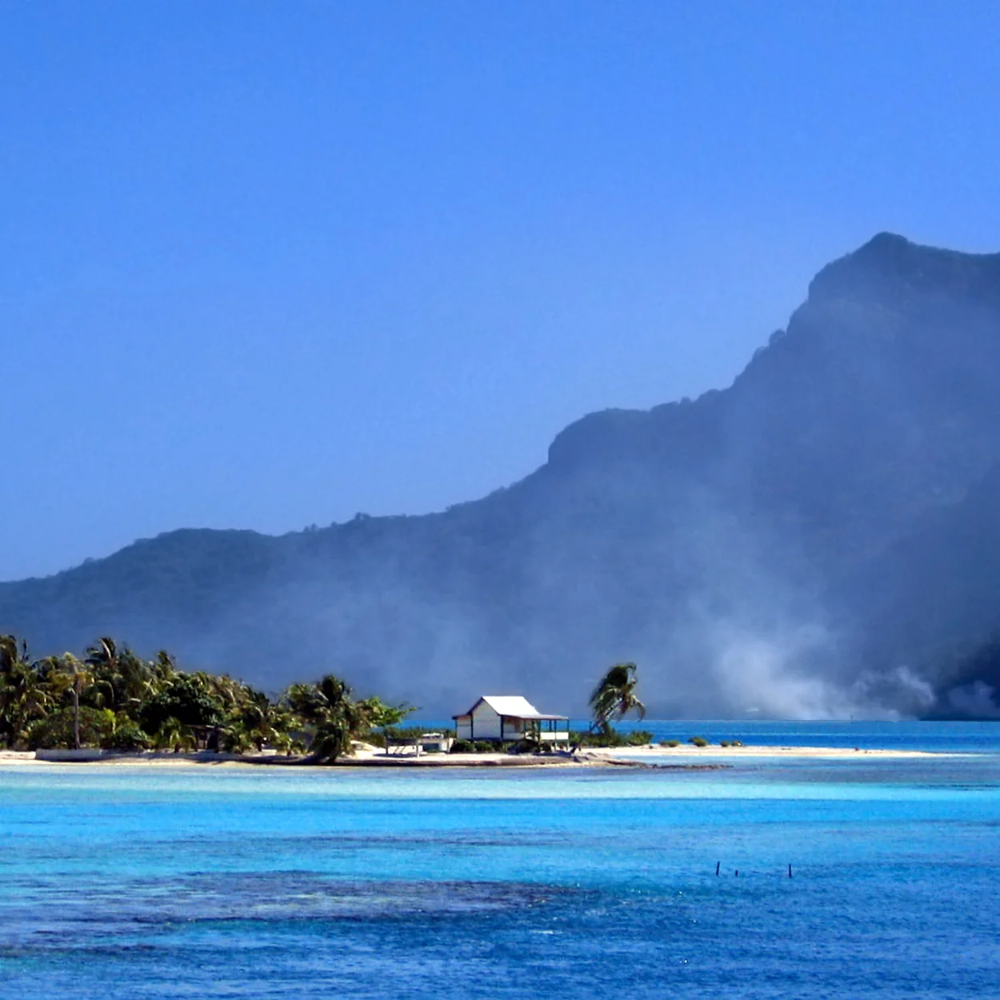

Lagon de Maupiti — plage de Tereia
Maupiti, Polynésie française · snorkeling, plongée, baignade, kayak

Île à 40 km de Bora Bora, avec l’un des plus beaux lagons de Polynésie selon Tahiti Tourisme. Tereia est « l’unique plage de l’île principale », de sable blanc et d’eau peu profonde (Routard). À marée basse, on peut rejoindre à pied le motu Auira depuis Tereia. Le lagon abrite une station de nettoyage des raies manta. À Bora Bora, à 40 km, la mer est à 28 °C en décembre et à 29 °C en janvier (Climats et Voyages).
- Lieu
- Maupiti, Polynésie française
- Niveau
- Variable selon les conditions
- Activités
- snorkeling, plongée, baignade, kayak
- Type d'eau
- Mer / océan
- Coordonnées
- -16.45, -152.27 (position approximative du secteur)
Dangers à connaître
- Les cyclones se forment de novembre à avril, surtout de décembre à mars, et les averses sont parfois abondantes en décembre et janvier, parmi les mois les plus pluvieux.
- La traversée à pied vers le motu Auira n’est possible qu’à marée basse : regarde la marée avant de partir.
- Les raies manta sont fragiles et sensibles au dérangement : pas de contact.
Le conseil d'Ocean Buddy
Près des raies manta, l’apnée est interdite : ne les touche pas, regarde-les à distance et laisse-les venir à toi. Le club de plongée de l’île organise des sorties en plongée ou en snorkeling.
Ouvrir dans Ocean Buddy Télécharger sur l'App Store
Source : Fiche Ocean Buddy · décembre 2026 · d’après Tahiti Tourisme, Routard, Climats et Voyages et Lonely Planet · à vérifier localement.